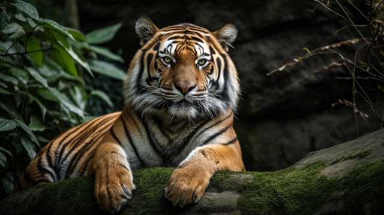
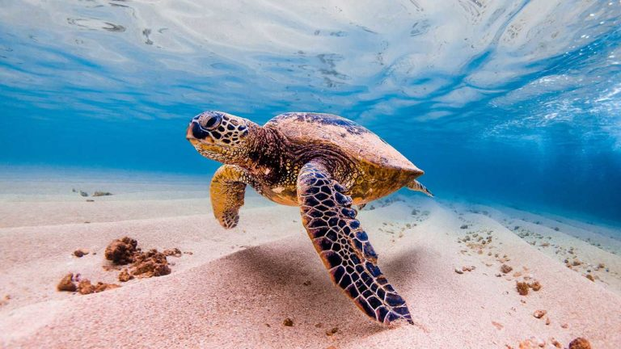
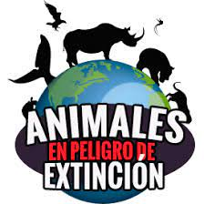

Animales en Peligro de Extinción
La pérdida acelerada de biodiversidad es una de las crisis más graves del siglo XXI. Muchas especies animales se encuentran al borde de la extinción debido a la caza furtiva, el tráfico ilegal, la destrucción de hábitats y el cambio climático. Protegerlas no solo es un deber ético, sino también una necesidad para mantener el equilibrio ecológico del planeta.
Especies Amenazadas
El tigre es uno de los carnívoros más grandes del mundo. Puede pesar más de 300 kilogramos y alcanzar hasta 3,3 metros de longitud. Este gran felino antaño habitaba Asia, desde la costa oriental de Rusia hasta el mar Caspio.Sin embargo, desde principios del siglo XX , se estima que el 97 % de los tigres salvajes del mundo se han perdido. Actualmente quedan alrededor de 4500 ejemplares en libertad en toda Asia, lo que convierte al tigre en una especie en peligro de extinción. El tigre real de Bengala es la subespecie de tigre más numerosa, representando aproximadamente la mitad de la población salvaje. El Tigre de Bengala ha visto reducida su población por la pérdida de selvas y la caza para tráfico de partes de su cuerpo.
Las tortugas marinas enfrentan amenazas por la contaminación de los océanos, la pesca accidental y la destrucción de playas de anidación. No son buenos titóricamente buscadas por su carne, piel, caparazón y huevos, ahora el cambio climático también representa una amenaza y ha puesto en peligro de extinción a seis de las siete especies de tortugas marinas. El sexo de las crías de estos animales depende de la temperatura de la arena en la que ponen los huevos: la arena más caliente provoca el aumento de la proporción de crías hembra. Por tanto, el cambio climático es el culpable de una crisis en las proporciones de sexos de las tortugas marinas.
Conciencia Ambiental
Movimiento de la vida silvestre. Haz clic en la imagen.
Especies con Poca Población
Especies más afectadas
| Especie | Tigre de Bengala |
|---|---|
| Tipo | Mamífero |
| Continente | Asia |
| Estado | En peligro |
| Especie | Oso Polar |
| Tipo | Mamífero |
| Continente | Ártico |
| Estado | Vulnerable |
| Especie | Rinoceronte Negro |
| Tipo | Mamífero |
| Continente | África |
| Estado | En peligro crítico |